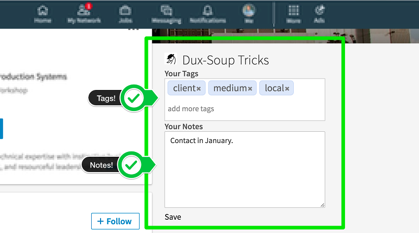

Thanks for installing Dux-Soup, you rock!
 for the latest Dux-Soup news, updates and service alerts.
for the latest Dux-Soup news, updates and service alerts.
Email us with your questions and suggestions.
What's new?
- Support for new LinkedIn Interface.

- Visit 'Connections' in new LinkedIn UI.
- Visit 'My Network' in new LinkedIn UI.
- New troubleshooting mode for support.
- Added tags to CSV download (only for visits since this update)
- More Excel-friendly CSV download, configured in the options panel.
- Improved notification visibility
- Adjusted visit-limits to new LinkedIn limits
- Misc. bugfixes for new LinkedIn Interface
- Notes and Tags extensions for standard LinkedIn
- Auto-Visiting and Scanning of profiles on the new LinkedIn Interface.
- Snooze and Wake in Continuous Mode, for long-running visits. Enabled by default (Pro).
- Configurable 'Pause X minutes every Y visits'.
- Select between 'visits today' and 'current captures' in Dux-Soup Badge.
- Always skip profiles without names (no longer configurable).
- Reduced visiting speed in random mode.
- More granular control over notifications.
5.2.x
- Auto-complete tags when adding tags, and when searching by tags.
- Dynamically displays list of available tags starting with the typed value.
- Ability to automatically tag profiles while auto-visiting. Enable this in the options panel.
- Added option to set max visits to 50 and 100.
5.1.x
- Recover from transient network failures during auto-visit.
- Sort visits in download by visit or scan time.
- Added timestamp to download filename.
- Improved auto-endorsement functionality (Pro).
- Improved stability and performance of profile cache.
- Improved handling of external license.
- Additional configuration options for daily limit.
- Added userid to options panel for improved customer support.
- Support for LinkedIn Recruiter (Pro).
- Include a timestamp for visits and scans in CSV download.
- Split name into 3 parts: First, Middle and Last.
- Bugfix for auto-reload in Sales Navigator.
v5.0.x
- Tag profiles without leaving LinkedIn.
- Search profiles matching one or more tags.
- Supports Standard LinkedIn, Business Plus and Sales Navigator.
- Up to 100 free tags using the Standard Edition.
- Unlimited tags using the Professional Edition.
- Extract the company website address.
- Improved stability on slow networks.
v4.6
- Added support for re-visit based on a previous data-download (Pro).
- Fixed bug with LinkedIn over plain HTTP (used in Australia).
- Robot now stops when profile-cache is full.
- Improved error handling in configuration initialization.
- Profiles are now visited inline with the resultpage, for better performance!
- Quick scan of group-members and connections has been improved (Pro).
- Visit connections (Pro).
- Group member visiting is back!
- Fixed a bug with Cyrillic names.
- Added option to set number of days between visits.
- Option to automatically endorse a profile when visiting (Pro).
- Misc bugfixes.
v4.5
- Search and visit connections of connections.
- Option to skip profiles based on name and profile picture.
- Introducing randomize visit speed to avoid LinkedIn detection (Pro).
- Reduced max visits to stay within current LinkedIn limits (Pro).
- Added extraction of telephone nr, IM and connection degree (Pro).
- Auto-expand profile contact info.
- Improved email extraction.
- Scan profiles of 1st Connections (Pro).
- Include Company Profile URL in CSV download (Pro).
- Store profile data between browser restarts.
v4.4
- Easily check prospects on Twitter with the quick-access 'Follow' button (see screenshot).
- Increased visit limit for LinkedIn Business Plus subscribers to 1000 per day (Pro).
- Daily visit-limit is now user-configurable via the options panel (Pro).
- User feedback via 'toasties' for all Dux-Soup actions.
- Keep notes with actions and follow-ups together with the LinkedIn profiles, using Dux-Soup Notes (see screenshot).
- These notes will load with the profiles whenever you access them!
- Export these notes together with profile summaries (Pro).
- Improved stability when visiting profiles on Mac and Ubuntu.
v4.3
v4.2
- Use Google to search for profiles straight from the Dux-Soup menu
- Search on multiple tabs at the same time
- Visit members of a group via the Group page in LinkedIn
- Automatically skips profiles you visited in the last 7 days
- Thottle visit speed to reduce load on PC (Pro)
- Up to 400 visits per day via standard LinkedIn (Pro)
- Up to 1500 visits per day via Sales Navigator (Pro)
If you enjoy Dux-Soup, why not drop us a line, or rate us in the Chrome webstore!